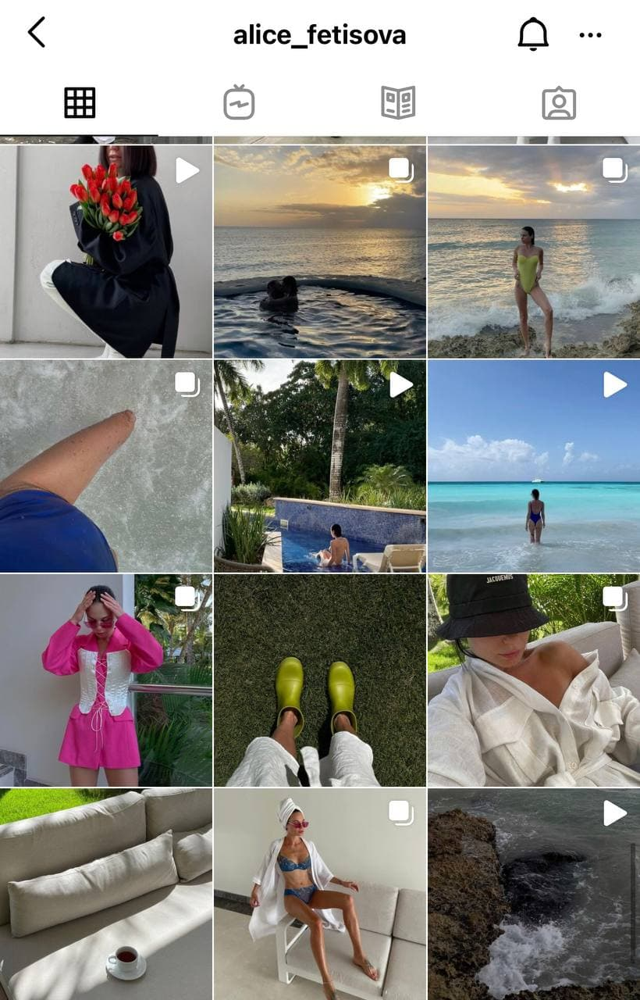

Ведення активного блогу в Instagram
Наразі сторінка в соціальних мережах - відображення Вас, як особистості.
У 2010 році, задавши питання: «що таке Instagram», багато активні користувачі соціальних мереж не дали відповіді.
Через 10 років сервіс обміну фото і відео став одним з популярних по скачуванню на Play Market і AppStore.
Авторами популярної соціальної мережі стали Кевін Систром і Майкл Крігер.
Причому, перший – саме придумав Instagram, але під іншою назвою. До 2010 року молоді люди працювали над додатком Burbn,
який був спрямований на створення фото і запам’ятовування геолокаций.
Цікаві факти, коли з’явився Instagram:
- додаток Burbn не був популярним. Влітку 2010 року Кевін Систром відправився зі
своєю дівчиною у відпустку. Вона сказала, що не хоче робити знімки, адже вони
виходять не такими яскравими, як у їхнього спільного друга. Тоді Кевін заявив,
що один використовує фільтри старих плівкових фотоапаратів. На що отримав
відповідь, що в його програмі теж повинні бути фільтри;
- перший рік ідея створення Инстаграма вважалася провальною: користувачі
набиралися повільно;
- початковий логотип соціальної мережі нагадував старий плівковий фотоапарат.
Його можна знайти за запитом «Instagram логотип»;
- соціальна мережа була випущена спочатку тільки під iOS і вже пізніше з’явилася
версія Android.
Посилання на сайт реєстрації в Інстаграм
За переходом на цю адресу ви отримаєте веб-сторінку рєстрації
Ось приклад стильного та сучасного візуалу Instagram - сторінки

Content-plan на 2 дні
| Day1 |
Day2 |
| Розказати плани на день |
Обговорити цікаві новини |
| Відзняти рекламу |
Розповісти підсумки тижня |